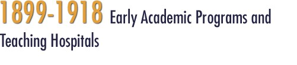
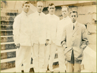
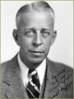
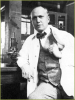

In some respects, the recruitment of Taylor, Flint and Loeb was ahead of its time, for pure research was still an exceptional activity at the University of California. In fact, at the turn of the twentieth century, while research was a professed ideal, instruction was the major mandate of a state university. As Physiologist Jacques Loeb wrote after leaving the University of California, “in a democracy today there is as yet no room in a state university for pure research. It may be done on the sly, but public pressure is against it.”
In 1904, in the wake of this profound change in the preclinical sciences instruction, the Medical Department also upgraded admission standards, ruling that all successful applicants have at least two full years of college before admission, thus ensuring adequate preparation for the more advanced science training they would receive. Specifically required were the study of chemistry, physics, biology, as well as English, French, or German.
>> Plans for a New Teaching Hospital
The Impact of Fulltime Pre-Clinical Faculty

The new changes were not accepted as an unmitigated good, however, for practical conflicts emerged between the new full-time professors interested in pure research and those faculty in medicine, pharmacy, and dentistry who were pressed by the more immediate need for instructing students in gross anatomy, diagnostic pathology, and therapeutics. Complaining of the insular needs of medical, dental, and pharmacy students, Alonzo Taylor wrote to President Wheeler, “There was a time when physiology and pathology were the handmaids of medicine and surgery, that day has passed forever. To limit instruction in physiology and pathology to that which is today of practical application, would be educational suicide…..we are here arrived at the parting of the ways of the commercial school of medicine and the university school of medicine.” UC house staff poses in front of the Medical School Building in 1911. Left to right: Interns Best, Markel, Bryan, Baldwin; Resident Howard C. Naffziger.

Eventually a workable compromise was reached with Dean Arnold D’Ancona, who, in addition to his duties as Dean of the Medical Department taught physiology and microscopy to dentistry students for a decade. The College of Pharmacy arranged for necessary anatomy, physiology and bacteriology instruction to be done by their own faculty in their facilities on Parnassus.
After completing medical school at the University of California, Howard C. Naffziger (b. 1884, d. 1961) studied neurosurgery at Johns Hopkins with Harvey Cushing, returned to UC and rose through the ranks, eventually becoming first full-time chair of surgery.
In some respects, the recruitment of Taylor, Flint and Loeb was ahead of its time, for pure research was still an exceptional activity at the University of California. In fact, at the turn of the twentieth century, while research was a professed ideal, instruction was the major mandate of a state university. As Physiologist Jacques Loeb wrote after leaving the University of California, “in a democracy today there is as yet no room in a state university for pure research. It may be done on the sly, but public pressure is against it.”
In 1904, in the wake of this profound change in the preclinical sciences instruction, the Medical Department also upgraded admission standards, ruling that all successful applicants have at least two full years of college before admission, thus ensuring adequate preparation for the more advanced science training they would receive. Specifically required were the study of chemistry, physics, biology, as well as English, French, or German.

Unfortunately for the Medical Department’s finances, the first impact of the new system was a huge reduction in qualified applicants and a much smaller entering class. Only nine new students matriculated in 1905, in sharp contrast to the thirty-three students admitted the previous year. This elite class included Howard C. Naffziger of Nevada City, California, and Herbert MacLean Evans, who later left San Francisco after one year to complete his instruction at Johns Hopkins. Naffziger later trained in neurosurgery at Johns Hopkins under Harvey Cushing and returned to San Francisco to a distinguished career at the medical school. Herbert Evans returned to the University of California to chair the anatomy department at Berkeley in 1915. Despite the reduced enrollment that came with higher standards, the UC Medical Department fared well in its drive to upgrade the quality of education. In 1906 the AMA Council of Medical Education inspected 160 medical schools and fully approved only half of these. The Medical Department of the University of California was rated Class A in this early survey.
Herbert McLean Evans (b. 1882, d. 1971) completed his medical training at Johns Hopkins and became Chair of Anatomy at UC in 1915.
>> Plans for a New Teaching Hospital
{% include footer.html %}